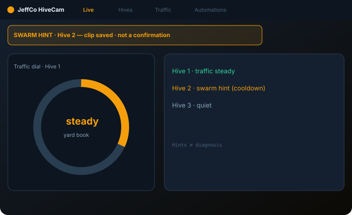
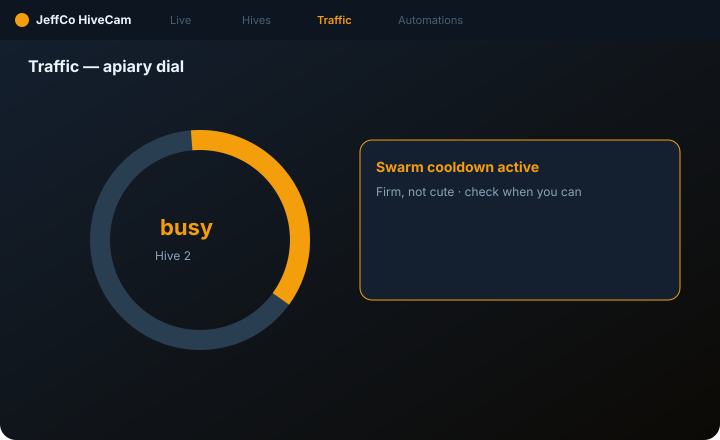
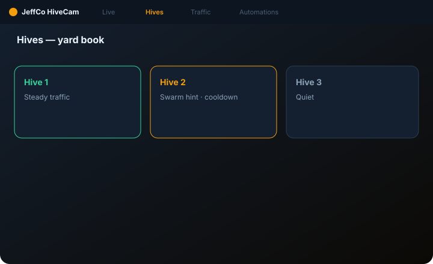

HiveCam
Apiary ops — hive traffic, swarm/health hints — a beekeeper’s yard book, Slice 0 ready.
For beekeepers who want traffic dials and gentle swarm awareness without panic-spam or disease claims.

What it does
HiveCam is an apiary console: Live entrance view, Hives CRM with nicknames, Traffic intensity dial/charts, and Automations for anomaly/swarm-hint notify with generous cooldowns.
Traffic is an activity proxy — approx intensity, not exact bee census. Swarm and health are hints with clips — never mite/disease diagnosis and never treatment CTAs. No auto-open hive / chemical actions day one.
Gentle fun is welcome on nicknames and healthy traffic; quiet firmness on swarm hints. Do not reuse YardCam pile metaphors.
Capabilities
Day-one surface vs Advanced / gated — from Clarity GH Pages pack.
Day-one surface
Live
Day oneHive face / entrance view
Hives
Day oneCRM + nicknames
Traffic
Day oneIntensity dial / chart (primary)
Automations
Day oneNotify on anomaly/swarm hint (dry-run, cooldowns)
Advanced / gated
Disease diagnosis / treatment
OutForbidden CTAs
Exact bee census gospel
OutTraffic = approx proxy
How to use it
First-run (wizard)
Add a feed
on the entrance (cam, USB, clip, or Practice feed).
Draw/register hive entrances
at least one to continue.
First traffic read proof
Continue locked until busy or clear quiet entrance read.
Optional hive name
Sunny, The Drama Box; or Skip.
Step E: Notify me
(dry-run) with cooldown awareness; confirm hints ≠ diagnosis.
Add feed on entrance
—
Draw/register hives
—
First traffic read proof
—
Step E
Notify me (dry-run) with cooldown awareness.
Confirm hints ≠ diagnosis
—
Daily loop
Live + Traffic dial
busy in a good way vs unusual
Swarm hint / sustained crash first (not every blip)
—
Hives CRM notes and nickname care
—
Respect cooldowns on swarm/health hints
no panic-spam
Badge: swarm hint / crash / cam / notify fail
not sleeping; not every traffic tick
Live + Traffic dial
—
Swarm hint / sustained crash
First — not every blip.
Hives CRM notes
—
Respect cooldowns
—
Badge
Swarm hint / crash / cam — not sleeping.
Honesty / trust
Swarm/health hints ≠ diagnosis; cooldowns.
- Swarm/health = hints — never medical confirmation or mite diagnosis.
- Traffic = approx activity proxy — not exact census.
- No auto treatment / chem / open-hive actuation.
- Cooldowns on swarm hints — no panic-spam.
- Not a YardCam pile counter.
- Dry-run ≠ live notify; unbound sensors ≠ error; sleeping ≠ failed.
Screenshots
Domain frames elevated from Design UI mocks + Clarity captions.


Get started
Clone jeffco-hivecam-module · read docs · open setup wizard.